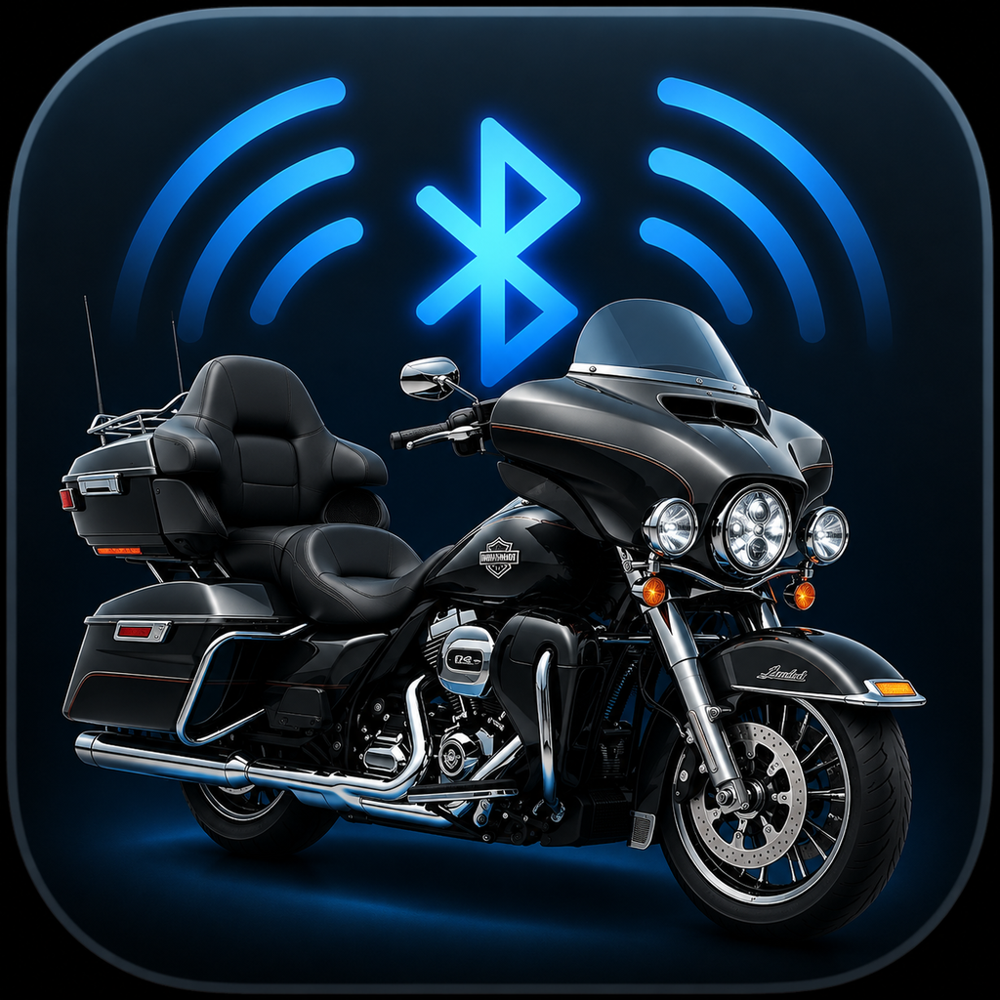
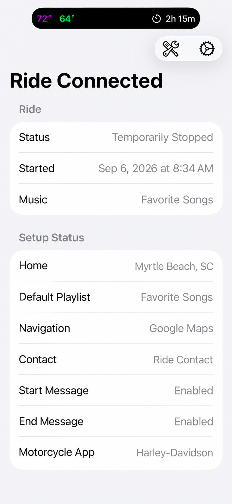
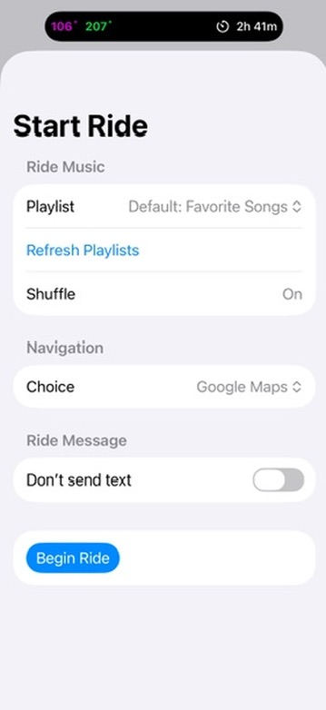
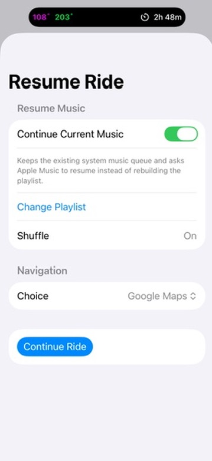
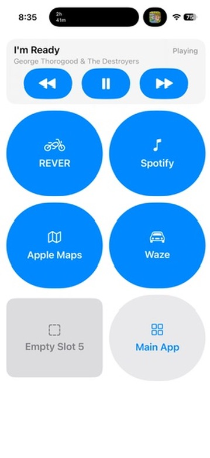
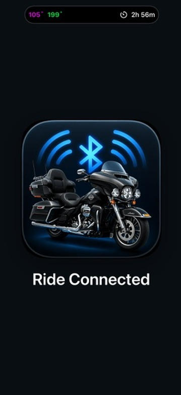

Recognizes the ride
A connection starts a new ride only when there is no active one. After a temporary stop, reconnecting resumes the same ride.

Native iPhone Motorcycle Automation Project
Ride Connected coordinates the repetitive parts of a motorcycle ride—starting music and navigation, preserving the ride through temporary stops, and guiding the completion workflow when the motorcycle returns home.

Ride Connected works with user-configured iOS Personal Automations. Those automations notify the app when the motorcycle’s Bluetooth connection connects or disconnects; the app does not continuously monitor arbitrary Bluetooth devices.
A connection starts a new ride only when there is no active one. After a temporary stop, reconnecting resumes the same ride.
A configured home location helps distinguish an Away stop from returning Home without treating every disconnect as the end.
Music, navigation, and optional ride-message choices remain reviewable at the beginning of a ride.
Local diagnostics retain important lifecycle results for troubleshooting during real-world testing.
Temporary stops remain part of the current ride. Returning home begins a deliberate completion workflow rather than silently ending the session.

A fresh ride offers the configured Apple Music playlist, shuffle preference, available navigation choices, and the optional START ride-message request.

After an Away stop, Ride Connected recognizes the existing session and offers Continue Current Music or a deliberate playlist change before continuing.
Home completion: A disconnect near the configured home starts the ride-completion workflow; the ride is finalized only after the required confirmation.

Ride Connected brings the selected ride controls into one screen while leaving the external apps responsible for their own content and behavior.
Select a library playlist and optionally shuffle it when beginning a ride.
On reconnect, Ride Connected asks Apple Music to resume the retained system queue when that queue remains available.
The riding panel provides previous, play or pause, and next controls for Apple Music playback.
Choose an available Apple Maps, Google Maps, or Waze installation. Ride Connected opens the selected app; it does not control the navigation app itself.
When a disconnect is classified Away, the active session is preserved. The next Bluetooth connection returns to that same ride and presents the resume workflow instead of creating an unrelated session.
An optional helper-assisted workflow can open the Harley-Davidson app and prompt for start or finish acknowledgement. This is a focused workflow, not a claim of universal motorcycle, model-year, infotainment, or Harley-Davidson compatibility.
START and END ride-status message requests can be configured separately, and both are optional. A helper acknowledgement does not establish carrier delivery or guarantee fully unattended sending.
Local diagnostic history records important Bluetooth automation handoffs, ride-state changes, Home or Away classifications, music actions, and external-app opening results to support troubleshooting.

Ride Connected is an active personal software project being refined through actual motorcycle use. It is not currently offered as an App Store release, public beta, or public download. No release date or future availability is being announced.